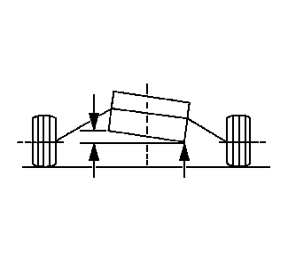

加速过猛时，车辆在一个方向上出现跑偏。减速时，车辆在另一个方向上出现跑偏。
在特定车辆上，以下因素可能导致扭矩转向更明显：
- • 右前侧直径稍小的轮胎，引起一个向右的扭矩。检查前轮胎在品牌、结构或尺寸上的不同。如果轮胎看起来相似，则交换两侧的前轮胎并重新测试车辆。轮胎和车轮总成在扭矩转向的校正上有显著的影响。
- • 右前和左前轮胎气压有较大差异
- • 查看前视图发现车桥左侧和右侧角度不同，可能导致车辆转向明显跑偏。从差速器至车轮向下倾斜最大的一侧车桥将跑偏。通常车桥从差速器向下倾斜。变速驱动桥面至水平面的倾斜，可以作为车桥倾斜角的标志。变速驱动桥面较高的一侧（如图左侧所示）具有最大的向下倾斜车桥角。